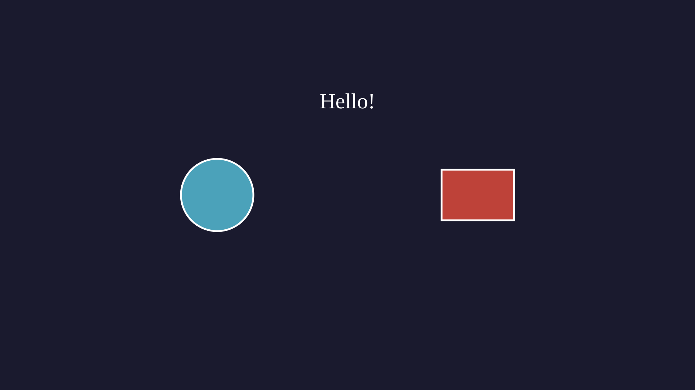

VectorMathAnim¶
The canvas is the top-level object that manages all visual objects, camera
controls, frame generation, and export. Every VectorMation script creates
exactly one VectorMathAnim instance.
Constructor¶
- class VectorMathAnim(save_dir, width=1920, height=1080, scale=1, verbose=False)¶
Create a new canvas with a given save directory and viewport size.
- Parameters:
save_dir (str) – Directory where SVG frames are saved. Created automatically if it does not exist.
width (int) – ViewBox width in pixels (default
1920).height (int) – ViewBox height in pixels (default
1080).scale (int) – Pixel scale factor applied to the output
<svg>element.1gives native resolution;2doubles it.verbose (bool) – When
True, enableDEBUG-level logging.
The canvas creates a default viewBox of
0 0 width heightand maintains an internal clock (canvas.time) used bygenerate_frame_svg()when no explicit time is given.- duration: float¶
Read-only property. Returns the total animation duration in seconds, auto-detected from the latest animation end time across all registered objects and camera keyframes.
- viewbox: tuple¶
The current
(x, y, width, height)viewBox. Readable and writable. Writing sets all four viewBox attributes from the current canvas time onward.
from vectormation.objects import * canvas = VectorMathAnim(save_dir='svgs/my_animation', verbose=True)
Example: Basic scene

v = VectorMathAnim('_ref_out', verbose=args.verbose)
v.set_background(fill='#1a1a2e')
c = Circle(r=100, cx=600, cy=540, fill='#58C4DD', fill_opacity=0.8)
r = Rectangle(200, 140, x=1220, y=470, fill='#E74C3C', fill_opacity=0.8)
t = Text('Hello!', x=960, y=300, font_size=60, fill='#fff',
stroke_width=0, text_anchor='middle')
v.add(c, r, t)
if args.for_docs:
Scene Setup¶
- VectorMathAnim.set_background(creation=0, z=-1, grid=False, grid_spacing=60, grid_color='#333', **styling)¶
Add a full-canvas background rectangle. Optional grid lines can be overlaid for alignment or debugging.
- Parameters:
creation (float) – Time at which the background appears.
z (int) – Z-order (default
-1, behind everything).grid (bool) – Draw grid lines over the background.
grid_spacing (float) – Distance (pixels) between grid lines.
grid_color (str) – Grid line colour.
styling – Any additional SVG styling (
fill,fill_opacity, etc.). When no fill is given the Styling defaults apply.
- Returns:
self(for chaining).
Calling
set_backgroundagain replaces the previous background.canvas.set_background(fill='#1a1a2e') canvas.set_background(fill='#0d1b2a', grid=True, grid_spacing=135)
Adding and Removing Objects¶
- VectorMathAnim.add_objects(*args)¶
Register one or more objects for rendering. Objects are drawn each frame sorted by z-order.
- Parameters:
args – VObject or VCollection instances.
- Returns:
self(for chaining).
addis an alias foradd_objects.circle = Circle(r=80, fill='#58C4DD') label = Text(text='Hello', x=960, y=540) canvas.add_objects(circle, label) # or equivalently: canvas.add(circle, label)
- VectorMathAnim.remove(*args)¶
Remove objects from the canvas so they are no longer rendered.
- Parameters:
args – Objects previously added via
add_objects().- Returns:
self(for chaining).
- VectorMathAnim.clear()¶
Remove all objects from the canvas except the background and defs. Useful for multi-scene scripts that rebuild the scene between segments.
- Returns:
self(for chaining).
- VectorMathAnim.add_def(def_obj)¶
Register a gradient, clip path, or filter for the
<defs>block. The object must have anidattribute and ato_svg_def(time)method.Aliases:
add_gradient,add_clip_path.- Returns:
self(for chaining).
- VectorMathAnim.add_section(time)¶
Add a section break at the given time. Sections allow pausing playback in the browser viewer (press
Nto jump to the next section). They are also used byexport_sections().- Parameters:
time (float) – Section boundary time in seconds.
- Returns:
self(for chaining).
Frame Generation¶
- VectorMathAnim.generate_frame_svg(time=None)¶
Return the complete SVG string for a single frame at the given time.
- Parameters:
time (float) – Timestamp to render. Defaults to
canvas.time.- Returns:
SVG string (including XML declaration and
<svg>wrapper).- Return type:
str
This is the core rendering method. It:
Evaluates the animated viewBox at time.
Emits any
<defs>(gradients, clip paths).Collects all objects whose
showattribute isTrueat time.Sorts them by z-order.
Runs updaters on each object.
Calls
to_svg(time)on each object and concatenates the result.Rounds floating-point numbers for compact output.
- VectorMathAnim.write_frame(time=None, filename=None)¶
Write an SVG frame to disk.
- Parameters:
time (float) – Timestamp (defaults to
canvas.time).filename (str) – Output path. Defaults to
<save_dir>/gen.svg.
Camera Controls¶
All camera methods animate the SVG viewBox, which effectively pans and zooms
the visible region. They return self for chaining.
- VectorMathAnim.camera_shift(dx, dy, start, end, easing=smooth)¶
Pan the camera by
(dx, dy)pixels over[start, end].- Parameters:
dx (float) – Horizontal shift in pixels.
dy (float) – Vertical shift in pixels.
start (float) – Animation start time.
end (float) – Animation end time.
easing – Easing function (default
smooth).
# Slowly pan 400px to the right over 2 seconds canvas.camera_shift(400, 0, start=1, end=3)
- VectorMathAnim.camera_zoom(factor, start, end, cx=None, cy=None, easing=smooth)¶
Example: camera_zoom
v = VectorMathAnim('_ref_out', verbose=args.verbose) v.set_background(fill='#1a1a2e') c1 = Circle(r=60, cx=500, cy=400, fill='#58C4DD', fill_opacity=0.8) c2 = Circle(r=60, cx=1420, cy=640, fill='#E74C3C', fill_opacity=0.8) c1.fadein(start=0, end=0.5) c2.fadein(start=0, end=0.5) v.camera_zoom(2.5, start=1, end=2.5, cx=500, cy=400) v.camera_reset(3.5, 5) v.add(c1, c2) if args.for_docs: v.export_video('docs/source/_static/videos/ref_camera_zoom.mp4', fps=30, end=6) if not args.for_docs:
Zoom the camera by factor around the point
(cx, cy)over[start, end].factor > 1zooms in;factor < 1zooms out.- Parameters:
factor (float) – Zoom factor.
start (float) – Animation start time.
end (float) – Animation end time.
cx (float) – Zoom centre x (default: canvas centre).
cy (float) – Zoom centre y (default: canvas centre).
easing – Easing function (default
smooth).
# Zoom 2x into the upper-left quadrant canvas.camera_zoom(2, start=0, end=2, cx=480, cy=270)
- VectorMathAnim.camera_follow(obj, start, end=None)¶
Make the camera continuously track an object, keeping it centred in the viewport. If end is given, the camera freezes at its position at that time.
- Parameters:
obj (VObject) – Object to follow.
start (float) – When tracking begins.
end (float) – When tracking ends (
None= track indefinitely).
Example: camera_follow
v = VectorMathAnim('_ref_out', verbose=args.verbose) v.set_background(fill='#1a1a2e') dot = Dot(cx=200, cy=540, r=14, fill='#58C4DD') dot.fadein(start=0, end=0.3) dot.shift(dx=1600, start=0.5, end=4.5) line = Line(200, 540, 200, 540, stroke='#58C4DD', stroke_width=3) line.p2.set_onward(0, dot.c.at_time) v.camera_zoom(3, start=0, end=0.5) v.camera_follow(dot, start=0.5, end=4.5) v.add(line, dot) if args.for_docs: v.export_video('docs/source/_static/videos/ref_camera_follow.mp4', fps=30, end=5) if not args.for_docs:
- VectorMathAnim.camera_reset(start, end, easing=smooth)¶
Reset the camera to the default full-canvas viewBox (
0 0 width height) over[start, end].- Parameters:
start (float) – Animation start time.
end (float) – Animation end time.
easing – Easing function (default
smooth).
- VectorMathAnim.focus_on(*objects, start, end, padding=100, easing=smooth)¶
Pan and zoom the camera to tightly frame the given objects (with padding), maintaining the canvas aspect ratio.
- Parameters:
objects – One or more VObject/VCollection instances to frame.
start (float) – Animation start time.
end (float) – Animation end time.
padding (float) – Extra padding (pixels) around the bounding box.
easing – Easing function (default
smooth).
canvas.focus_on(circle, label, start=1, end=2, padding=80) # ... inspect detail ... canvas.camera_reset(3, 4)
Display¶
- VectorMathAnim.browser_display(start=0, end=None, fps=60, port=8765, hot_reload=False)¶
Open a browser-based viewer with real-time playback over WebSocket. The viewer supports zoom (scroll wheel), playback speed control, keyboard shortcuts, and a timeline scrubber.
- Parameters:
start (float) – Playback start time. Negative values are relative to the end (e.g.
-3starts 3 seconds before the end).end (float) – Playback end time.
Noneauto-detects from the last animation.0displays a single static frame at start (no animation).fps (int) – Frames per second.
port (int) – WebSocket server port.
hot_reload (bool) – When
True, watches the calling script for file changes and automatically re-runs it, allowing a live development workflow.
Keyboard shortcuts in the browser viewer:
Key
Action
SpacePause / resume playback
RRestart from the beginning
NJump to next section break
FFit the view to the full canvas
QQuit the server
RightStep forward one frame (while paused)
LeftStep backward one frame (while paused)
Single-picture mode:
Pass
end=0to display a static frame without animation. This is useful for debugging layouts.# Static preview at t=0 canvas.browser_display(start=0, end=0)
Export¶
- VectorMathAnim.export_png(time=0, filename='frame.png', scale=None)¶
Export a single frame as a PNG image.
- Parameters:
time (float) – Timestamp to render.
filename (str) – Output file path.
scale (int) – Pixel scale factor.
Noneuses the canvasscale.
Requires
cairosvg(pip install cairosvg).
- VectorMathAnim.export_video(filename='animation.mp4', start=0, end=None, fps=60, scale=None)¶
Export the animation as an MP4 video.
- Parameters:
filename (str) – Output file path.
start (float) – Start time.
end (float) – End time (
None= auto-detect).fps (int) – Frames per second.
scale (int) – Pixel scale factor (
1= 1920x1080,2= 3840x2160).
Requires
cairosvgandffmpeg.canvas.export_video('output.mp4', fps=30, end=10)
- VectorMathAnim.export_gif(filename='animation.gif', start=0, end=None, fps=30, scale=None, loop=0)¶
Export the animation as an animated GIF.
- Parameters:
filename (str) – Output file path.
start (float) – Start time.
end (float) – End time (
None= auto-detect).fps (int) – Frames per second.
scale (int) – Pixel scale factor.
loop (int) – Number of loops (
0= infinite).
Requires
cairosvgandPillow.
- VectorMathAnim.export_sections(prefix='section')¶
Export each section boundary as a standalone SVG file. Files are written to the canvas save directory as
<prefix>_000.svg,<prefix>_001.svg, etc.- Parameters:
prefix (str) – Filename prefix.
Inspection¶
- VectorMathAnim.get_all_objects()¶
Return a list of all registered objects (excluding the background).
- Return type:
list[VObject]
- VectorMathAnim.find_by_type(cls)¶
Return all objects matching a given class (including subclasses).
- Parameters:
cls (type) – The class to filter by (e.g.
Circle,Text).- Return type:
list[VObject]
- VectorMathAnim.find(predicate)¶
Return all objects where
predicate(obj)returnsTrue.- Parameters:
predicate (callable) – Filter function.
- Return type:
list[VObject]
- VectorMathAnim.get_object_count(time=None)¶
Return the number of visible objects at the given time (excludes the background).
- Parameters:
time (float) – Timestamp (default
0).- Return type:
int
- VectorMathAnim.list_objects_by_type(time=None)¶
Return a dict mapping class names to lists of visible objects of that type at the given time.
- Parameters:
time (float) – Timestamp (default
0).- Return type:
dict[str, list[VObject]]
- VectorMathAnim.get_visible_objects_info(time=None)¶
Return a list of dicts with
'class'and'id'keys for each visible object at the given time.- Parameters:
time (float) – Timestamp (defaults to canvas time).
- Return type:
list[dict]
- VectorMathAnim.get_snap_points(time=None)¶
Extract snappable points (vertices, endpoints, centres) from all visible objects at the given time. Used internally by the browser viewer’s snap-to-grid feature.
- Parameters:
time (float) – Timestamp (defaults to canvas time).
- Return type:
list[tuple]
CLI Utility¶
- parse_args()¶
Parse common command-line arguments for VectorMation scripts. Returns an
argparse.Namespacewith the following fields:Flag
Type
Default
Description
-v/--verbosebool
FalseEnable verbose (debug) logging
--portint
8765Browser viewer WebSocket port
--fpsint
60Frames per second
-o/--outputstr
NoneOutput file path (e.g.
out.mp4,frame.png)-d/--durationfloat
NoneAnimation duration override (seconds)
--startfloat
NonePlayback start time
--endfloat
NonePlayback end time
--hot-reloadbool
FalseRe-run script on file change in browser viewer
from vectormation.objects import * args = parse_args() canvas = VectorMathAnim(save_dir='svgs/demo', verbose=args.verbose)
From the command line:
python my_script.py -v --fps 30 --hot-reload python my_script.py -o animation.mp4
Workflow Examples¶
Basic setup¶
A minimal script that creates a canvas, adds an object with an animation, and opens the browser viewer.
from vectormation.objects import *
args = parse_args()
canvas = VectorMathAnim(save_dir='svgs/basic', verbose=args.verbose)
canvas.set_background(fill='#1a1a2e')
circle = Circle(r=100, fill='#58C4DD', fill_opacity=0.8)
circle.fadein(0, 1)
circle.shift(dx=400, start=1, end=3)
canvas.add(circle)
canvas.browser_display(fps=args.fps, port=args.port, hot_reload=args.hot_reload)
Camera animation¶
Combine camera methods to guide the viewer’s attention through a scene.
from vectormation.objects import *
args = parse_args()
canvas = VectorMathAnim(save_dir='svgs/camera', verbose=args.verbose)
canvas.set_background()
c1 = Circle(r=50, cx=300, cy=300, fill='#58C4DD')
c2 = Circle(r=50, cx=1600, cy=700, fill='#83C167')
c1.fadein(0, 0.5)
c2.fadein(0, 0.5)
# Focus on the first circle
canvas.focus_on(c1, start=1, end=2, padding=80)
# Reset to full view
canvas.camera_reset(3, 4)
# Zoom into the second circle
canvas.camera_zoom(3, start=5, end=6, cx=1600, cy=700)
# Reset again
canvas.camera_reset(7, 8)
canvas.add(c1, c2)
canvas.browser_display(fps=args.fps, port=args.port)
Browser preview with hot reload¶
Hot reload watches the script file for changes and re-runs it automatically, enabling a rapid edit-save-preview loop.
from vectormation.objects import *
args = parse_args()
canvas = VectorMathAnim(save_dir='svgs/dev', verbose=args.verbose)
canvas.set_background(fill='#0d1b2a')
t = Text(text='Edit me!', x=960, y=540, font_size=72,
fill='#fff', stroke_width=0, text_anchor='middle')
t.write(0, 1)
canvas.add(t)
canvas.browser_display(fps=args.fps, port=args.port, hot_reload=True)
Run with:
python my_script.py --hot-reload
Export video¶
Use export_video for MP4 output or export_gif for animated GIFs.
Use export_video for headless render pipelines.
from vectormation.objects import *
args = parse_args()
canvas = VectorMathAnim(save_dir='svgs/export', verbose=args.verbose)
canvas.set_background(fill='#1a1a2e')
rect = Rectangle(200, 200, fill='#E76F51')
rect.fadein(0, 1)
rect.rotate_by(1, 4, degrees=360)
canvas.add(rect)
# Export a video
canvas.export_video('spinning_rect.mp4', fps=30, end=5)
# Export a single PNG frame
canvas.export_png(time=2.5, filename='frame_at_2.5s.png')
# Export an animated GIF
canvas.export_gif('spinning_rect.gif', fps=15, end=5)
Sections for structured playback¶
Sections create pause points in the browser viewer, useful for presentation-style animations.
from vectormation.objects import *
args = parse_args()
canvas = VectorMathAnim(save_dir='svgs/sections', verbose=args.verbose)
canvas.set_background()
title = Text(text='Part 1', x=960, y=540, font_size=72,
fill='#fff', stroke_width=0, text_anchor='middle')
title.write(0, 1)
canvas.add_section(2) # pause here
subtitle = Text(text='Part 2', x=960, y=640, font_size=48,
fill='#aaa', stroke_width=0, text_anchor='middle')
subtitle.write(2, 3)
canvas.add_section(4) # pause here again
canvas.add(title, subtitle)
canvas.browser_display(fps=args.fps, port=args.port)
Tips and Best Practices¶
One canvas per script. Each script should create a single
VectorMathAnim instance. The canvas manages a global save directory
used by TeX caching and frame output.
Use parse_args() for flexibility. Using args.output to
conditionally call export_video makes your script usable both
interactively and in CI pipelines.
Add objects before displaying. All objects must be registered with
add_objects (or add) before calling browser_display or
export_video. Objects added after display starts will not appear.
Auto-detected end time. When end=None, the canvas scans every
registered object’s last_change attribute plus its own camera
keyframes to determine the animation duration. This means objects
created but not added to the canvas do not contribute to the end time.
Z-ordering. Objects are drawn sorted by their z attribute.
Lower values render first (behind); higher values render on top. The
background defaults to z=-1. Use obj.to_front() or
obj.to_back() for quick adjustments, or obj.set_z(value) for
precise control.
Static previews. Use browser_display(end=0) to display a
single frame at start without animation. This is handy for
checking layouts and positioning before adding animations.
Camera methods chain. All camera methods return self, so you
can chain them:
(canvas
.camera_zoom(2, start=0, end=1)
.camera_shift(200, 0, start=1, end=2)
.camera_reset(3, 4))
Scale for high-DPI export. Pass scale=2 to the constructor or
to export_video / export_png to render at 2x resolution
(3840x2160 for the default 1920x1080 canvas).
Hot reload workflow. Run your script with --hot-reload, keep
the browser tab open, and edit your script in a separate editor. On
each file save the animation restarts with your changes.